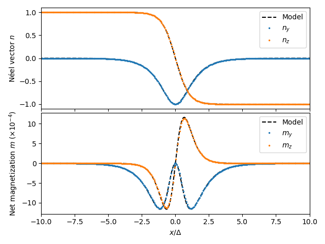

Altermagnetic domain wall#
In this example, we compute the Néel and net magnetization profiles of a Bloch wall as described in Moreels et al. (2026). The theoretical model is based on Gomonay et al. (2024).
from mumaxplus import World, Grid, Altermagnet
import matplotlib.pyplot as plt
import numpy as np
# ----------- Material and simulation parameters -----------
cs = 0.5e-9
a = 0.35e-9
Ms = 2.9e5
K = 2e5
A1 = 25e-12
A2 = 15e-12
A0 = -5e-13
A12 = A0/2
length = 256e-9
width = 64e-9
# ----------- Create altermagnet -----------
Nx = int(length / cs)
Ny = int(width / cs)
world = World((cs, cs, cs))
grid = Grid((Nx, 1, 1))
magnet = Altermagnet(world, grid)
# ----------- Set parameters -----------
magnet.msat = Ms
magnet.alpha = 0.01
magnet.ku1 = K
magnet.anisU = (0, 0, 1)
magnet.afmex_nn = A12
magnet.afmex_cell = A0
magnet.latcon = a
magnet.alterex_1 = A1 # first exchange matrix eigenvalue
magnet.alterex_2 = A2 # second exchange matrix eigenvalue
magnet.alterex_angle = 0 # exchange frame of reference aligns with the simulation grid
# ----------- Create a two-domain state -----------
dw_idx = 10 # initial guess of DW width (in cells)
m = np.zeros(magnet.sub1.magnetization.shape)
m[2, :, :, 0:Nx//2 - dw_idx] = 1 # Left domain
m[1, :, :, Nx//2 - dw_idx:Nx//2 + dw_idx] = -1 # Domain wall
m[2, :, :, Nx//2 + dw_idx:] = -1 # Right domain
magnet.sub1.magnetization = m
magnet.sub2.magnetization = -m
# minimize to ground state
magnet.minimize()
# ----------- Plot Néel and net magnetization profiles -----------
fig, axs = plt.subplots(2, 1, sharex=True)
scale_net = 1e4
# Theoretical profiles
dw = np.sqrt((0.5*(A1+A2) - A12) / (2*K)) # Theoretical DW width
t = np.linspace(-Nx*cs/2, Nx*cs/2, Nx) / dw
# --- NEEL ---
theta = 2*np.arctan(np.exp(t))
axs[0].plot(t, np.cos(theta), 'k--', label="Model")
axs[0].plot(t, np.sin(-theta), 'k--')
# --- NET ---
Han = 2 * K / Ms
Hex = -8 * A0 / ( Ms * (a**2))
prefactor = 0.5 * (Han/Hex) * (A1-A2) / (0.5*(A1+A2) - A12)
theory_y = -prefactor * np.sinh(t)**2 / np.cosh(t)**3
theory_z = prefactor * np.sinh(t) / np.cosh(t)**3
axs[1].plot(t, scale_net * theory_y, 'k--', label="Model")
axs[1].plot(t, scale_net * theory_z, 'k--')
# Simulated profiles
ms = 3
# --- NEEL ---
neel = magnet.neel_vector()[:, 0, 0, :]
axs[0].plot(t, neel[1], '.', label=r"$n_y$", markersize=ms)
axs[0].plot(t, neel[2], '.', label=r"$n_z$", markersize=ms)
# --- NET ---
net = 0.5 * (magnet.sub1.magnetization() + magnet.sub2.magnetization())[:, 0, 0, :]
axs[1].plot(t, scale_net * net[1], '.', label=r"$m_y$", markersize=ms)
axs[1].plot(t, scale_net * net[2], '.', label=r"$m_z$", markersize=ms)
# --- Plotter stuff ---
axs[1].set_xlabel(r"$x/\Delta$")
axs[1].set_ylabel(r"Net magnetization $m$ ($\times 10^{-4}$)")
axs[0].set_ylabel(r"Néel vector $n$")
axs[0].set_xlim(-10, 10)
axs[0].legend()
axs[1].legend()
plt.tight_layout(h_pad=0.2)
plt.show()
{kind=link}
